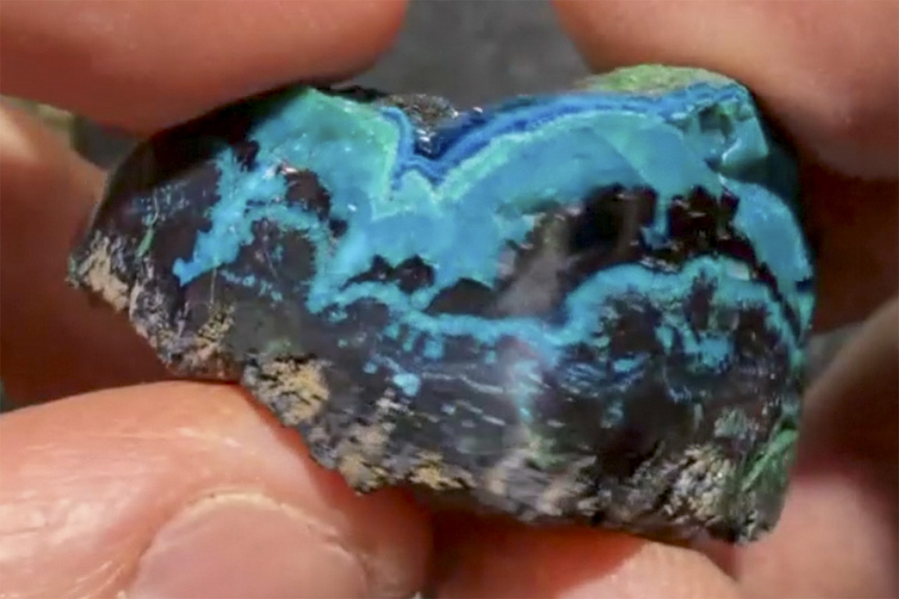

Chrysocolla
"Polished Chrysocolla with Tenorite and Malachite"
VIII-10370
Ray Mine, Scott Mtn., Pinal County, Arizona, USA
Purchased 5/9/2026 from MinCollect for $93.54
Core Collection • In Collection
Details
Storage Type: Flat
Storage Location: 000 None
Size class: Miniature (0)
Dimensions: 3.9 × 2.5 × 2.2 cm
Mass: 26.14 g
Luster: Average, Polished